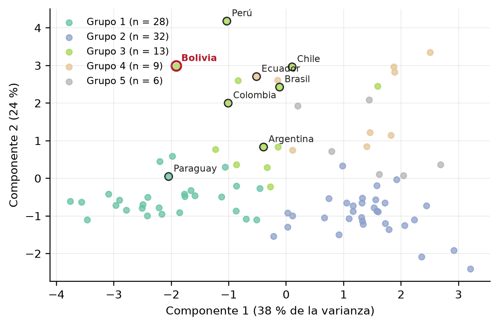
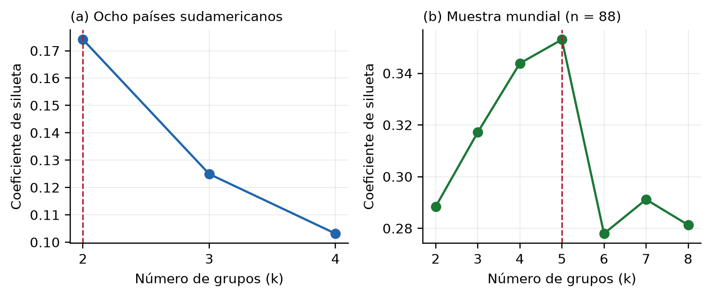
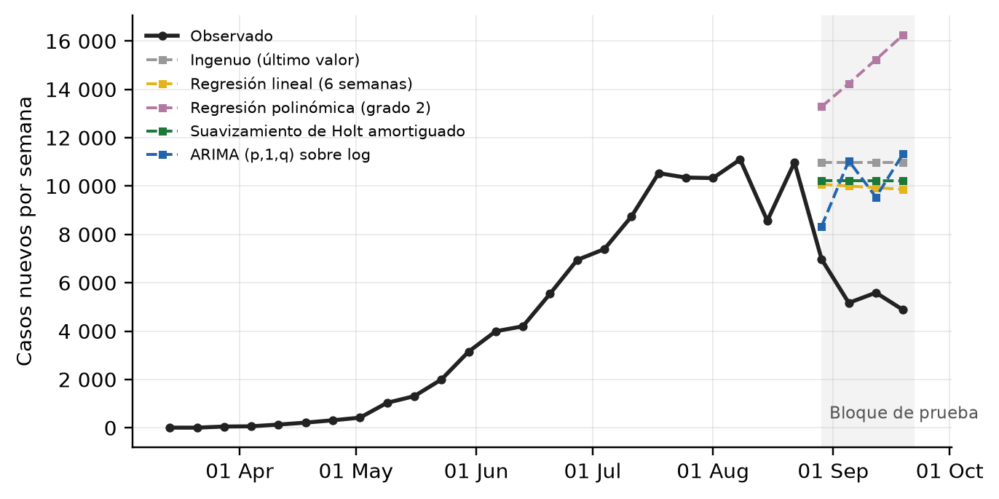
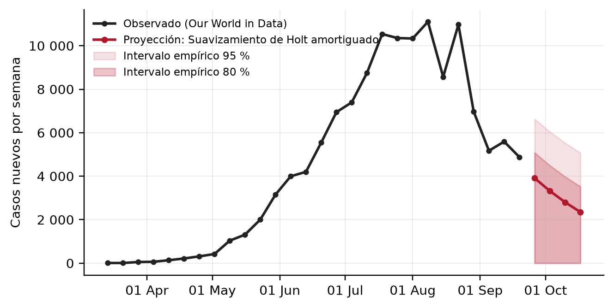
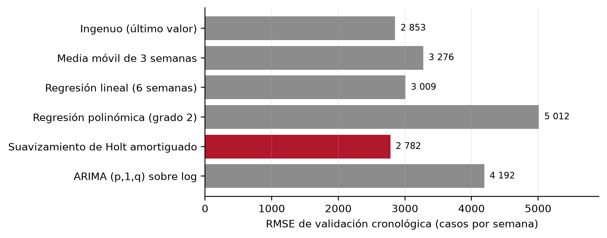
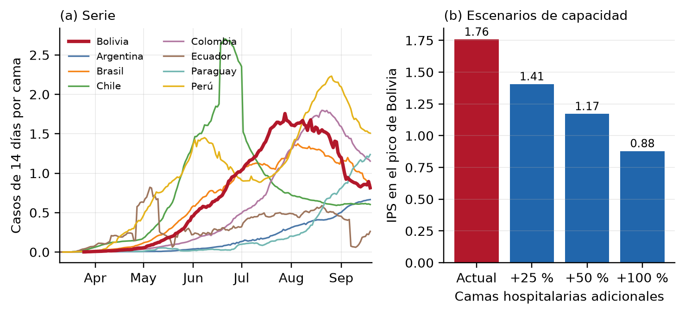
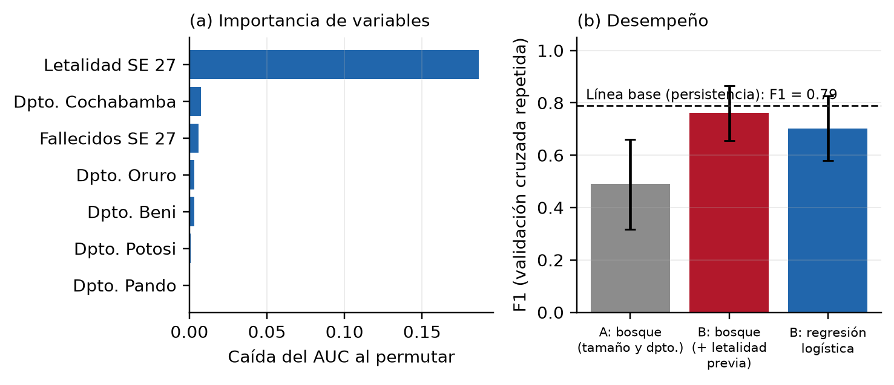
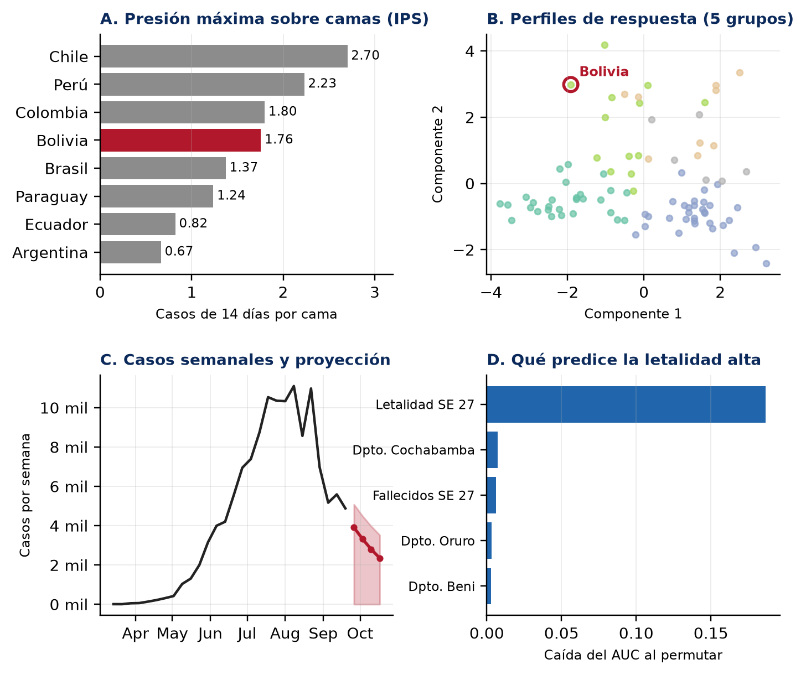

Proyecto de Ciencia de Datos · Ingeniería de Sistemas
La respuesta sanitaria de Bolivia frente al COVID-19
Resultados de los tres modelos: cómo se compara Bolivia con otros países, cuántos casos semanales cabía esperar y qué municipios tenían más riesgo de letalidad alta.
Bolivia tenía la segunda letalidad más alta de los ocho países comparados, solo detrás de Ecuador (8,9 %).
En el pico del 28 de julio hubo 1,76 casos de 14 días por cada cama hospitalaria del país.
Bolivia cae en el grupo de alta transmisión con medidas rígidas, junto a Colombia, Perú, Brasil y Chile.
La letalidad previa de cada municipio predice su letalidad posterior; un modelo más complejo no la supera.
Modelo 1 · Aprendizaje no supervisado
¿A qué países se parece Bolivia?
Agrupación k-means de 88 países según 8 indicadores de la pandemia y de sus recursos sanitarios.
| k | 8 países | 88 países |
|---|---|---|
| 2 | 0,174 | 0,288 |
| 3 | 0,125 | 0,317 |
| 4 | 0,103 | 0,344 |
| 5 | — | 0,353 |
| 6 | — | 0,278 |
| 7 | — | 0,291 |
| 8 | — | 0,281 |
Con solo 8 países la estructura es débil (silueta 0,17). Separa a Bolivia, Ecuador y Paraguay (letalidad media de 5,5 %, 1,3 camas por mil, población joven) de Argentina, Brasil, Chile, Colombia y Perú (letalidad de 3,0 %, 2,5 camas por mil).
Con 88 países la mejor partición tiene 5 grupos (silueta 0,353). Es estable: coincide bien con Ward (ARI = 0,75) y con 50 corridas de semillas distintas (ARI medio de 0,77, mínimo de 0,52).
Los cinco perfiles mundiales
Grupo 1 · Brote leve, población joven
28 países40 muertes/millón, IDH 0,63, edad mediana 25 años. Incluye a Paraguay.
Grupo 2 · Alta capacidad hospitalaria
32 países5,8 camas por mil, IDH 0,86, población mayor (42 años) y medidas poco rígidas.
Grupo 3 · Alta transmisión, medidas rígidas
13 países · Bolivia16 483 casos y 424 muertes por millón, rigurosidad de 72,7. La mayoría de Sudamérica.
Grupo 4 · Alta letalidad
9 paísesLetalidad de 8,6 % y 501 muertes por millón. Incluye a Ecuador.
Grupo 5 · Testeo masivo
6 países567 pruebas por mil habitantes y letalidad de solo 1,0 %.


Compañeros de grupo de Bolivia
Argentina, Brasil, Chile, Colombia, Costa Rica, Estados Unidos, Kazajistán, Kuwait, Panamá, Perú, Arabia Saudita y Sudáfrica.
| País | Distancia |
|---|---|
| Colombia | 1,87 |
| Perú | 2,31 |
| Ecuador | 2,53 |
| Panamá | 2,65 |
| Sudáfrica | 2,76 |
| El Salvador | 2,87 |
Distancia euclidiana en las 8 variables estandarizadas.

Modelo 2 · Series de tiempo
¿Cuántos casos semanales cabía esperar?
Seis métodos de pronóstico a 4 semanas sobre los casos nuevos semanales de Bolivia (28 semanas, pico el 08/08 con 11 102 casos), evaluados con 13 cortes cronológicos.
| Modelo | MAE | RMSE | MAPE | R² |
|---|
Todos tienen R² negativo, o sea que en promedio predicen peor que la media del periodo evaluado. Holt amortiguado gana porque es el que menos se equivoca, no porque acierte. En el último bloque de prueba (29/08 al 19/09) todos esperaban unos 10 000 casos por semana, porque el pico acababa de pasar, y llegaron entre 4 900 y 7 000.
| Semana | Real | Holt | ARIMA |
|---|---|---|---|
| 29/08 | 6 974 | 10 229 | 8 338 |
| 05/09 | 5 171 | 10 225 | 11 049 |
| 12/09 | 5 592 | 10 222 | 9 543 |
| 19/09 | 4 879 | 10 219 | 11 338 |
| Semana | Puntual | Intervalo 80 % | ARIMA (1,1,2) |
|---|---|---|---|
| 26/09 | 3 910 | 0 – 5 082 | 3 609 |
| 03/10 | 3 320 | 0 – 4 493 | 2 948 |
| 10/10 | 2 804 | 0 – 3 976 | 2 416 |
| 17/10 | 2 351 | 0 – 3 523 | 1 986 |
Los dos modelos coinciden en que los casos bajan en octubre. Los intervalos salen de los errores de la validación y llegan hasta cero, así que la cifra exacta es muy incierta; la tendencia a la baja es lo más confiable.





Modelo 2 · Índice de presión sanitaria
¿Cuánta presión hubo sobre los hospitales?
El IPS divide los casos nuevos de los últimos 14 días entre las camas hospitalarias del país. Un valor de 1 significa un caso reciente por cada cama.
| País | Camas | IPS pico | Fecha del pico | IPS 19/09 |
|---|---|---|---|---|
| Chile | 40 335 | 2,70 | 21/06 | 0,60 |
| Perú | 52 755 | 2,23 | 26/08 | 1,51 |
| Colombia | 87 010 | 1,80 | 20/08 | 1,15 |
| Bolivia | 12 840 | 1,76 | 28/07 | 0,82 |
| Brasil | 467 631 | 1,37 | 05/08 | 0,86 |
| Paraguay | 9 272 | 1,24 | 19/09 | 1,24 |
| Ecuador | 26 465 | 0,82 | 05/05 | 0,26 |
| Argentina | 225 979 | 0,67 | 19/09 | 0,67 |
En el pico hubo 22 560 casos en 14 días. Para bajar de 1 caso por cama hacían falta un 76 % más de camas (22 560 en total). Para igualar el pico mediano de los otros siete países (1,37) bastaban 16 431.

Modelo 3 · Clasificación supervisada
¿Qué municipios llegarían a una letalidad alta?
94 municipios con al menos 30 casos (39 de letalidad alta y 55 de baja). Con datos de la semana 27 se predice si tendrán una letalidad de 3,7 % o más en la semana 30. Conjunto A: tamaño del brote y departamento; conjunto B: además, la letalidad y los fallecidos de la semana 27.
| Modelo | Variables | Exactitud | Precisión | Sensibilidad | F1 | AUC |
|---|---|---|---|---|---|---|
| Clase mayoritaria | línea base | 0,585 | — | — | — | 0,500 |
| Persistencia (letalidad SE 27 ≥ 3,7 %) | línea base | 0,830 | 0,811 | 0,769 | 0,789 | 0,831 |
| Árbol de decisión | A | 0,634 | 0,639 | 0,389 | 0,451 | 0,606 |
| Bosque aleatorio | A | 0,689 | 0,764 | 0,387 | 0,489 | 0,672 |
| Regresión logística | A | 0,682 | 0,692 | 0,445 | 0,522 | 0,648 |
| Árbol de decisión | B | 0,775 | 0,830 | 0,599 | 0,678 | 0,786 |
| Bosque aleatorio | B | 0,818 | 0,833 | 0,717 | 0,761 | 0,830 |
| Regresión logística | B | 0,771 | 0,763 | 0,676 | 0,703 | 0,793 |
El bosque aleatorio B y la regla de persistencia ("si ya tenía letalidad alta en la semana 27, seguirá alta") logran el mismo AUC (0,83), y la regla tiene mejor F1 (0,79 contra 0,76). Solo con tamaño y departamento (conjunto A) los modelos apenas superan a la clase mayoritaria. La conclusión es que la letalidad de un municipio es muy persistente: la mejor alerta temprana es vigilar su letalidad actual.
Matriz de confusión · bosque B
Promedio por repetición de la validación (los 94 municipios). El modelo no detecta 11 de los 39 municipios de letalidad alta.
Qué variables importan
Si se desordena la letalidad de la semana 27, el AUC cae 0,187. Si se desordena cualquier otra variable, cae menos de 0,01 (Cochabamba 0,007; fallecidos SE 27 0,006; Oruro y Beni 0,003).


Interpretación
Conclusiones
- Bolivia enfrentó un brote grave con poca capacidad. Con 1,1 camas por mil habitantes, la menor de la región, tuvo una de las presiones hospitalarias más altas (1,76) y la segunda mortalidad por millón.
- Su perfil es el de alta transmisión con medidas rígidas. Fue el país más estricto de los ocho (rigurosidad media de 89,9), y aun así su brote se parece al de Colombia y Perú.
- El pico de casos fue a inicios de agosto y la tendencia en septiembre era a la baja. Los modelos no anticiparon el cambio de tendencia.
- La letalidad cambia mucho según el territorio: de 1,6 % en La Paz a 8,6 % en Pando. Es persistente en el tiempo, lo que permite usarla como alerta temprana.

